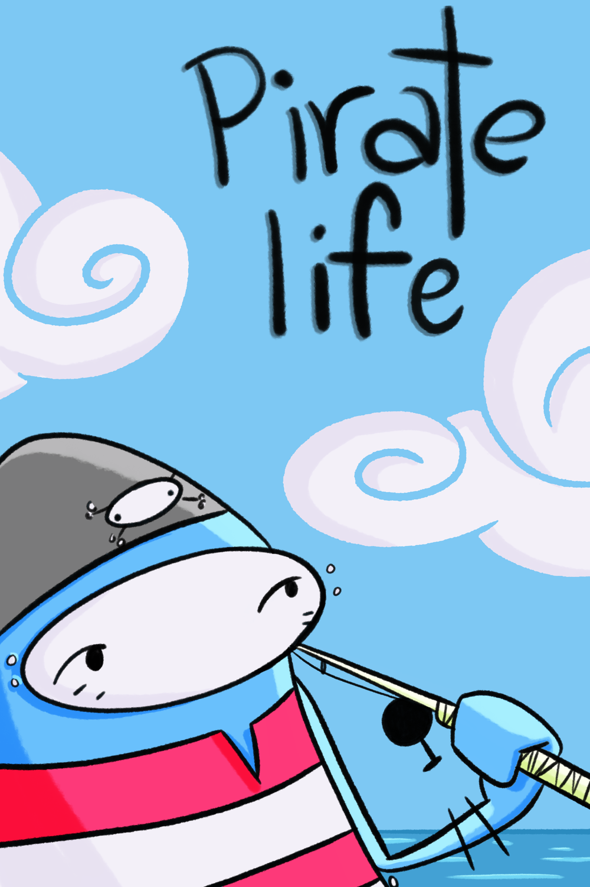
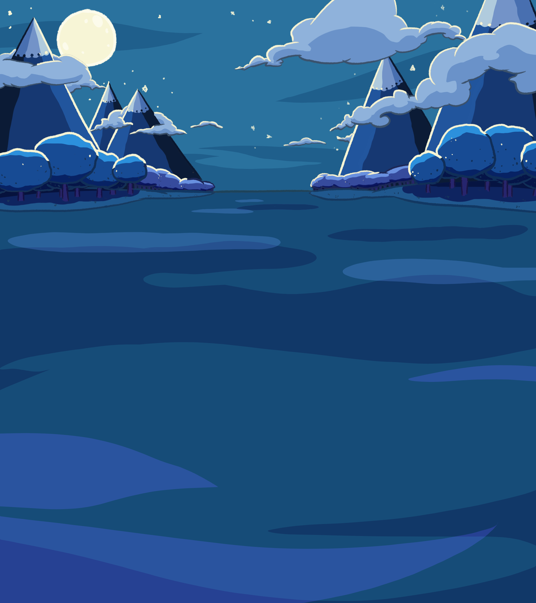

Pirate Life
One man, one fish, one electrifying boat ride.
Final film from animation school.
Credits:
Animation - Jayson Woolvett
Composer - Steve Carson
Post Sound Mix - Laszlo Borondy



Tranquil
Loosely inspired by a time I took a Greyhound bus across Canada.
First film from animation school.
☆Official Selection - Short Stack Film Festival 2017☆
Credits:
Animation - Jayson Woolvett
Music - Finnish Whistler by Roger Whittaker


